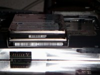

トップページ＞＞＞「いろいろ」目次
FMV-BIBLO NE HDD換装記(9GB→20GB)
初版作成：2003/04/08
- 前書き
- 本題
- 後書き或いは感想
先日、友人のFMV-BIBLO NEが急に調子が悪くなったと電話がかかってきた。
話を聞いてみると、「System not found」というメッセージが表示され、「なんかがりがりというか、異音がする。」とやばげな話。
ここまで来れば「HDDが物理的に壊れた。」と目星を付けて、20GBの2.5inchHDDが余っていたので交換してあげることになりました。
この話題ではHDDの換装しか扱いません。OS(Win98SE)の再インストールとかはマニュアルを読んで臨機応変に対応してください。
ちなみにFMV-BIBLO NEは友人が大学入学の際、大学生協で共同購入したPCでCeleron433MHz, 9GBHDD, メモリは・・・忘れた。で三年前のシロモノ。まあ、HDDが物理的に吹っ飛んでも不思議ではなさそうなタイミングです。保証はとっくの昔に切れてます。
それでは始めます。Mebiusの時とは違って、さくさく行きましょう。
（写真が暗くて見づらいかもしれません。サムネイルをクリックした後の拡大画像の方では多少修正してみました。すんません。）
目次に戻る
BIOSを立ち上げてみるとプライマリマスタが認識されていません。HDDが物理的に壊れてしまった証拠です。というわけで、余っていたIBMの20GBHDDに換装することになりました。
早速ひっくり返し、内蔵CD-ROMドライブを外します。拡大画像でマークしてありますが、たった一カ所のネジを外すだけで、CD-ROMドライブを手前にスライドすることができました。
CD-ROMの下に（ひっくり返してあるから実際は上かな？）HDDが取り付け金具に収まってはめてありました。
こんな感じ。
取り付け金具に貼ってあるシールの通りに外せば大丈夫です。ネジを二カ所外し、マイナスドライバなどを隙間に入れて、てこの要領で外します。
外し終わりました。あとは良くあるパターンで、取り付け金具のサイドに四ヶ所ネジ止めされていますのでそれを外せばHDDが取り出せます。んで、新しいHDDに入れ替えるだけ。

が、ここでちょっとした問題が発生しました。上が元のHDD、取り付け金具に嵌っている下のHDDが新しい20GBのものです。新しいHDDの方が、微妙に横幅が大きい。
取り付け金具が少しゆがんでしまいました。
が、実際に本体の方に戻してみると何とか収まったので不問に付します。ただネジは片方にしか締めませんでした。取り付け金具がゆがんでしまったため、もう片方のネジ穴が合わなかったからです。
これでお終いです。CD-ROMを元に戻しBIOSを立ち上げるとしっかり20GB認識されていました。元々9GB入っていましたので、8GBOverの問題は今回は発生しません。IBMのDiskManagerを入れる必要は無かったです。
・・・というか。今回使ったIBMの20GBHDDは、元々IBMのDMを導入してあったので。
逆にDMをアンインストールした、というオチ。
目次に戻る
この後サスペンド用の領域を、リカバリCD中のPHDISKとかいうので確保し、基本MSDOS領域を10GBで一つ。拡張を10GBで。その中に論理MSDOSを一つ10GB。
これでリカバリCDが予想している、Cドライブ(10GB)とDドライブ(10GB)が用意完了。あとはリカバリCDのインストールプログラムに任せておけば無事Win98SEが立ち上がりました。
というわけで、今回は以上です。
目次に戻る
トップページ＞＞＞「いろいろ」目次